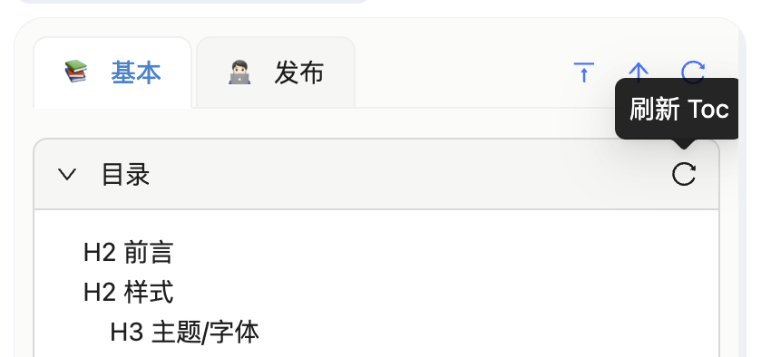

Table of Contents
This page provides an overview of the basic functionality of the table of contents.
Displaying the Table of Contents
After clicking the plugin icon in the top right corner of the browser, the default user interface that opens is the table of contents. Clicking on a title within the table of contents will jump to the corresponding section.

Manually Refreshing the Table of Contents
In rare cases (such as when long documents are just loaded), the table of contents may not be fully rendered all at once. In these instances, you can click the refresh button in the top right corner of the table of contents to manually refresh it.
